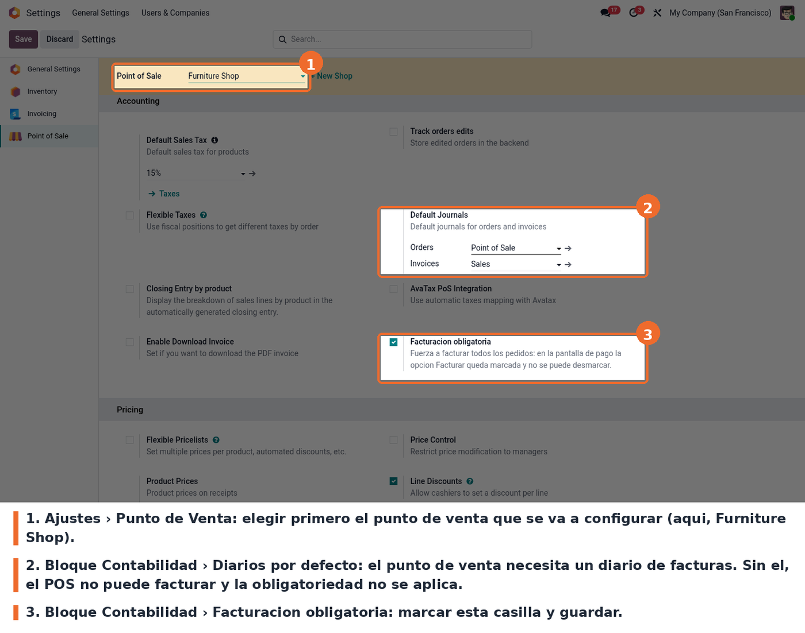
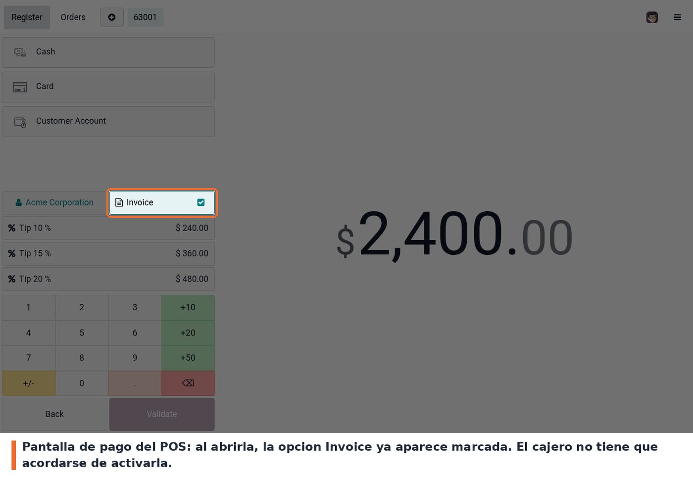
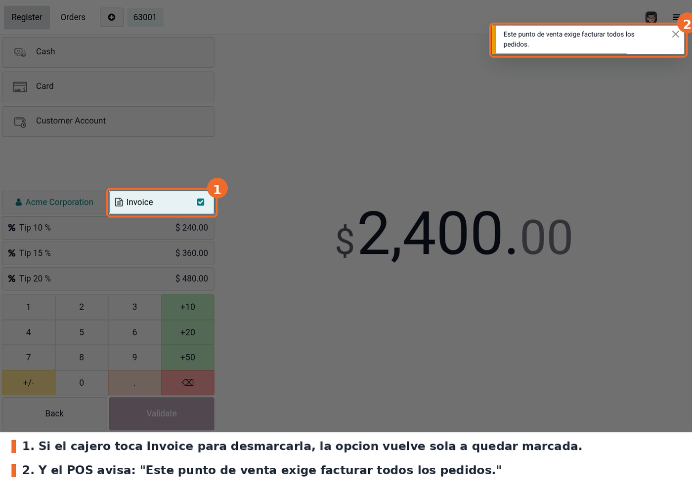

Fuerza a facturar todos los pedidos de un punto de venta. Cada punto de venta
gana un interruptor, Facturacion obligatoria (enable_obin): cuando esta
activo, al abrir la pantalla de pago el pedido queda marcado para facturar sin
que el cajero toque nada, y si el cajero pulsa Invoice para desmarcarlo la
opcion vuelve a marcarse sola, con un aviso en pantalla.
Los puntos de venta que no tengan el interruptor activo siguen comportandose como siempre: facturar sigue siendo opcional.
Ajustes > Punto de Venta, bloque Contabilidad, casilla Facturacion obligatoria. Es una configuracion por punto de venta: primero se elige el punto de venta arriba y despues se marca la casilla. No olvidar Guardar.
Para que el cambio llegue a la caja no alcanza con recargar la pantalla del POS: hay que volver a entrar desde el backend (boton Continue Selling / Open Register).
La casilla esta en los ajustes del punto de venta:

Casilla Facturacion obligatoria en los ajustes del punto de venta
Con el interruptor activo, cualquier pedido de ese punto de venta llega a la pantalla de pago con Invoice ya marcado:

Pantalla de pago del POS con la opcion Invoice marcada automaticamente
Si el cajero intenta desmarcarla, la opcion se restablece sola y el POS lo avisa con el mensaje "Este punto de venta exige facturar todos los pedidos.":

Aviso del POS al intentar desmarcar la opcion Invoice
Los pedidos ya finalizados no se tocan: el modulo solo actua sobre el pedido en curso.
static/description/icon.png. El modulo se publica sin icono propio.auto_install) en cuanto esta point_of_sale.